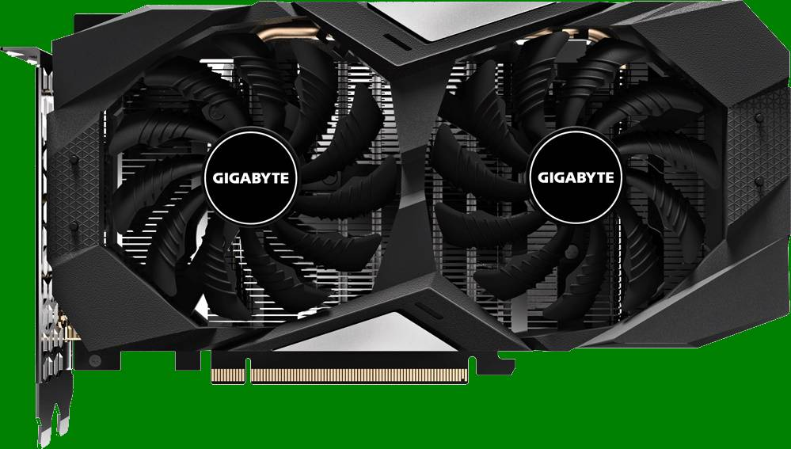
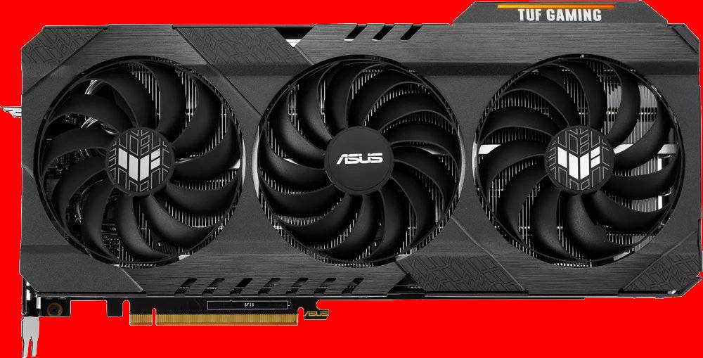
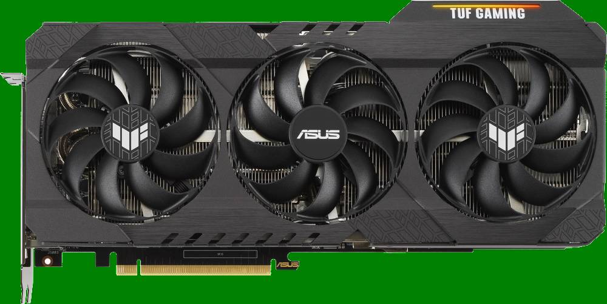
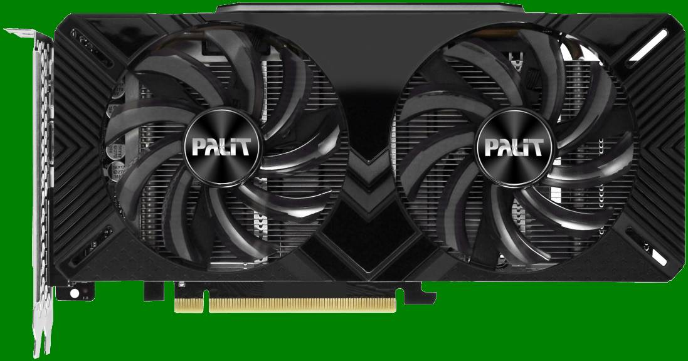
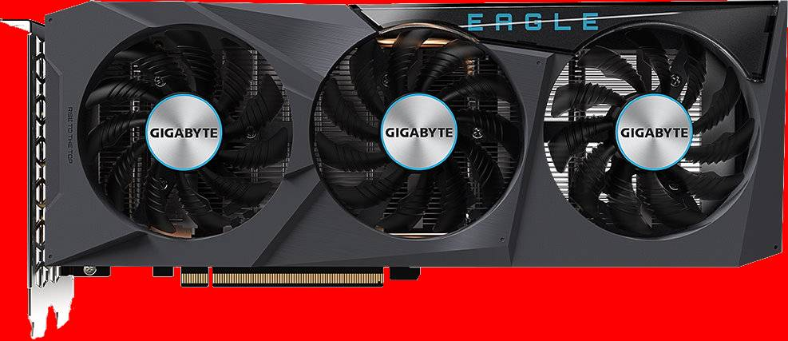

Видеокарты
Видеокарта – это компонент материнской платы, отвечающий за обработку видеоданных и вывод на монитор изображения. Можно встретить названия: видеоадаптер, графическая плата, графическая карта, графический адаптер или на компьютерном сленге – «видяха». Есть два вида видеокарт – встроенные и внешние.
Встроенные видеокарты
Встроенные видеокарты являются неотъемлемой частью современной материнской платы, поэтому они получили название – интегрированные. В характеристиках компьютера встроенный видеоадаптер могут обозначать как on board (с англ. «на плате»).
Для своей работы, интегрированная видеокарта забирает часть общих ресурсов компьютера. Из-за этого, производительность, как самой видеокарты, так и компьютера будет ниже, чем у компьютера с внешним видеоадаптером. Разъем(ы) для подключения монитора расположен непосредственно на материнской плате и выходит на заднюю панель системного блока. Интегрированная видеокарта применяется, как правило, в недорогих компьютерах, предназначенных для офисных задач. Для работы в профессиональных программах обработки видео, 3D моделирования, а также для современных трехмерных игр с высокой детализацией понадобиться внешняя видеокарта.
Внешняя видеокарта
Внешняя видеокарта для обработки видеоданных использует свои ресурсы, т.к. имеет собственный процессор (графический процессор – GPU) и оперативную память. Она является съемной и располагается на материнской плате в специальном разъеме – слоте, что позволяет легко ее заменить в случае выхода из строя или для замены на более производительную.
Внешняя видеокарта намного производительней встроенной, из-за чего ее графический процессор выделяет много тепла. Во избежание перегрева и выхода из строя, все современные внешние видеокарты имеют систему охлаждения в виде вентилятора, установленного на графический процессор.
Внешняя видеокарта имеет несколько разъемов для монитора или других видеоустройств, которые отличаются интерфейсом подключения. При установленном видеоадаптере они выходят на заднюю панель системного блока.
Основные характеристики видеокарт
Для компьютерного чайника интерес представляют несколько основных характеристик.
Объем видеопамяти. Измеряется в мегабайтах (Мб) или гигабайтах (Гб). Современные видеокарты имеют объем от 1 Гб. Если компьютер приобретается для игр, то видеокарту должна быть от 2 Гб и выше. В случае офисного применения достаточно до 1 Гб.
Тип видеопамяти. В видеокартах используется несколько типов памяти – DDR3, DDR5 или GDDR6, которые отличаются быстродействием. Чтобы было проще для начинающего пользователя, чем больше цифра после DDR, тем больше производительность памяти, но и стоит она дороже.
Разъемы для подключения монитора и видеоустройств. Немаловажный факт при выборе видеокарты. На современной внешней видеокарте должны присутствовать несколько разъемов подключения.
Лучше всего, для подключения монитора использовать цифровые интерфейсы (DVI, HDMI, DisplayPort), ввиду того, что аналоговый VGA более подвержен помехам и качество выдаваемого изображения у него хуже, чем у цифровых.
Примеры реальных видеокарты
-
Gigabyte GeForce RTX 2060 D6 6G
Модель GPU: NVIDIA GeForce RTX 2060
Объем памяти: 6 ГБ
Тип памяти: GDDR6
Макс. подключаемых мониторов: 4
HDMI: 1 шт
DisplayPort: 3 шт
Поддержка VR: +
-
Asus Radeon RX 6900 XT TUF TOP GAMING
Модель GPU: AMD Radeon RX 6900 XT
Объем памяти: 16 ГБ
Тип памяти: GDDR6
Макс. подключаемых мониторов: 4
HDMI: 1 шт
DisplayPort: 3 шт
Поддержка VR: +
-
Asus GeForce RTX 3090 TUF OC
Модель GPU: NVIDIA GeForce RTX 3090
Объем памяти: 24 ГБ
Тип памяти: GDDR6X
Макс. подключаемых мониторов: 5
HDMI: 2 шт
DisplayPort: 3 шт
Поддержка VR: +
-
Palit GeForce GTX 1660 Dual
Модель GPU: NVIDIA GeForce GTX 1660
Объем памяти: 6 ГБ
Тип памяти: GDDR5
Макс. подключаемых мониторов: 3
DVI-D: 1 шт
HDMI: 1 шт
DisplayPort: 1 шт
Поддержка VR: +
-
Gigabyte Radeon RX 6600 EAGLE 8G
Модель GPU: AMD Radeon RX 6600
Объем памяти: 8 ГБ
Тип памяти: GDDR6
Макс. подключаемых мониторов: 4
HDMI: 2 шт
DisplayPort: 2 шт
Поддержка VR: +